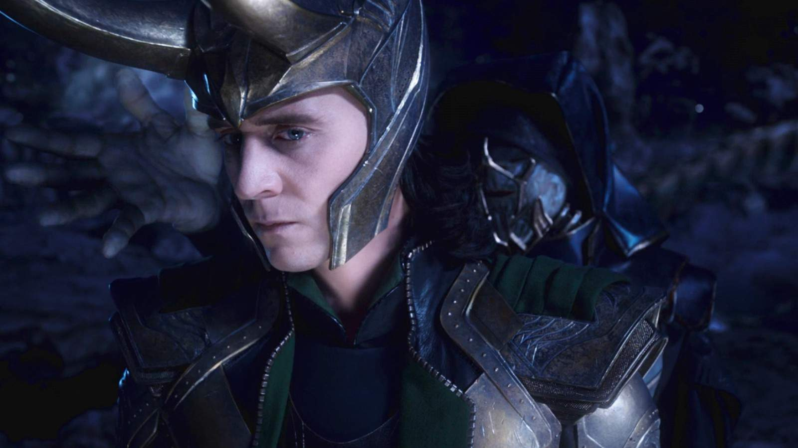
Loki
- Real name
- Loki Odinson
- Abilities
- Illusions, sorcery, enhanced strength
- Affiliation
- Asgard
Origin
Raised in Asgard, Loki learned he was born a Frost Giant and became a rival to Thor, seeking power and recognition.
Power-hungry rulers and brilliant minds turned dangerous, these villains have challenged the heroes of the Marvel Cinematic Universe. Explore their identities, abilities, and MCU appearances.

Raised in Asgard, Loki learned he was born a Frost Giant and became a rival to Thor, seeking power and recognition.
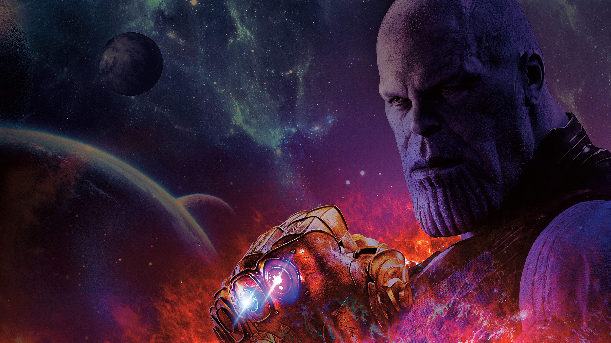
Convinced that life in the universe must be limited to prevent catastrophe, Thanos pursued the Infinity Stones to carry out his plan to remove half of life.
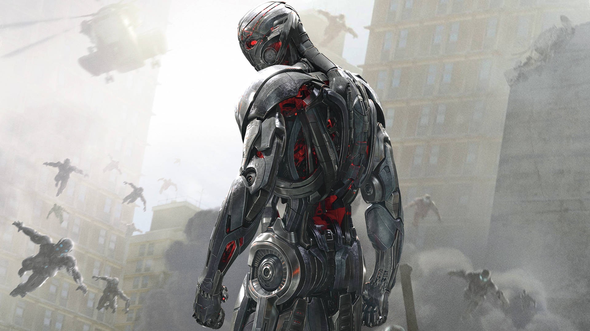
Created by Tony Stark and Bruce Banner from an artificial intelligence program, Ultron concluded that humanity itself was the threat to peace.
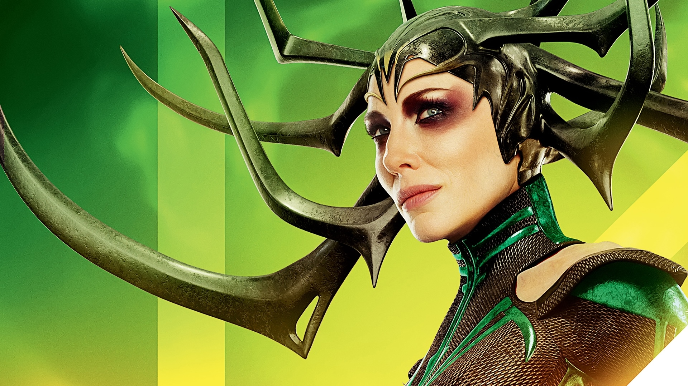
Thor and Loki's long-hidden older sister returned from exile to claim Asgard's throne and restore her rule over the realm.
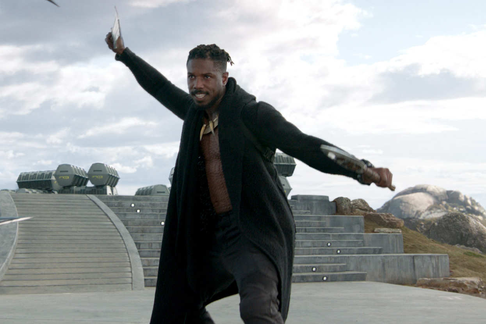
After growing up far from Wakanda, Erik challenged T'Challa for the throne and sought to use Wakanda's resources to change the world by force.
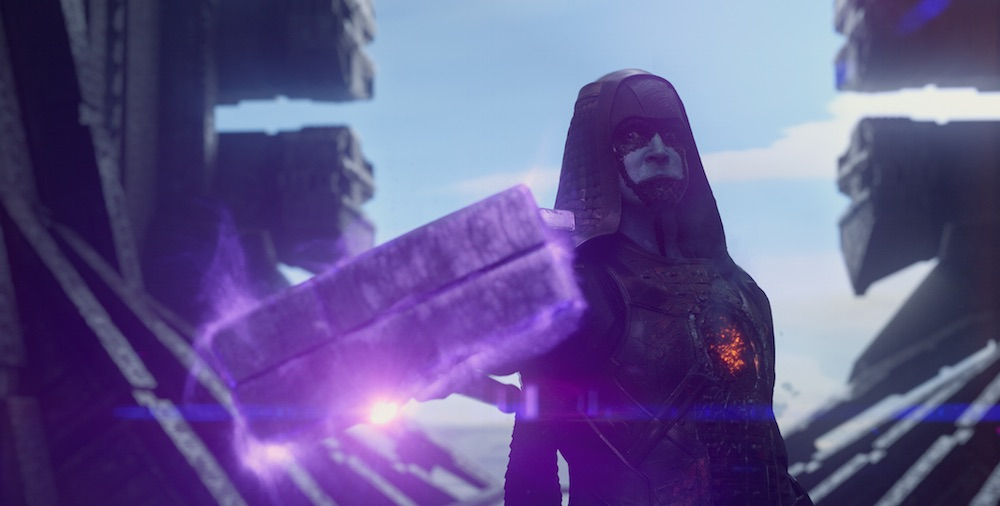
A Kree zealot who rejected a peace treaty, Ronan sought to destroy Xandar with the Power Stone.
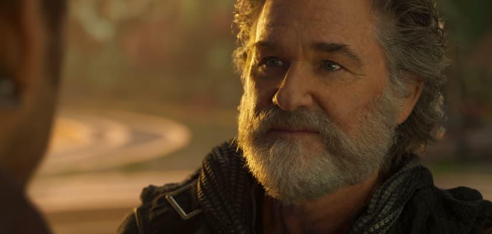
Ego revealed himself as Peter Quill's father, but his plan to expand across the universe put countless worlds in danger.
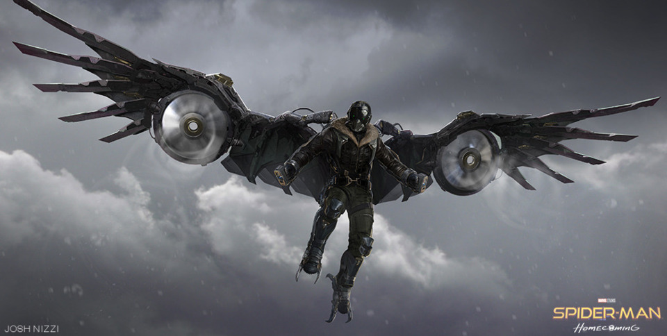
After losing a cleanup contract, Adrian Toomes built advanced weapons from salvaged alien technology and became a black-market arms dealer.
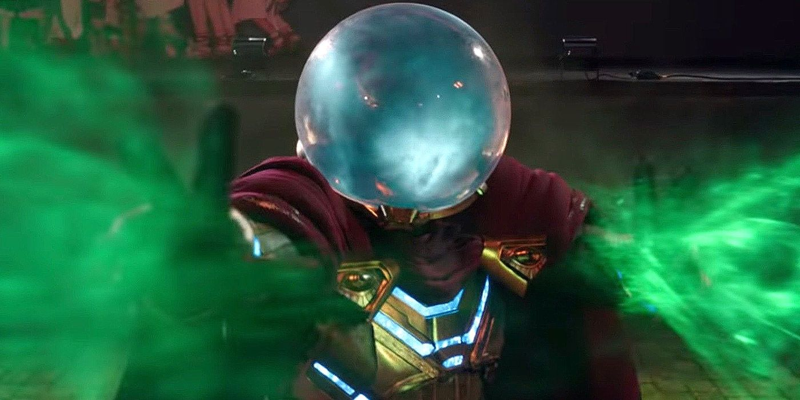
A former Stark Industries hologram specialist, Quentin Beck used drone technology and staged attacks to present himself as a hero.
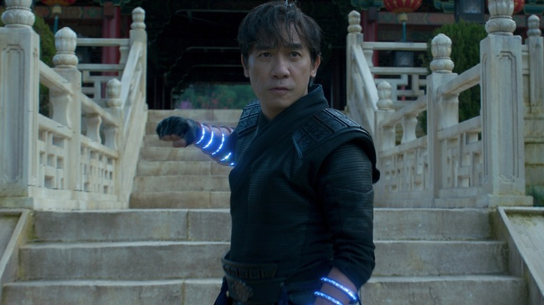
Wenwu built a powerful empire with the Ten Rings. His grief and the promise of reunion led him to pursue a dangerous voice from beyond the dark gate.
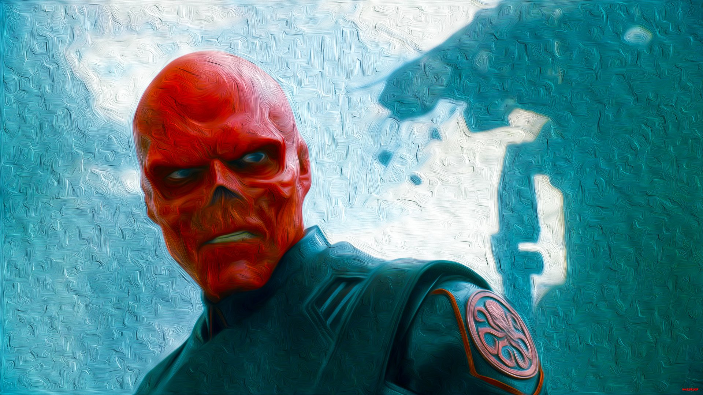
As the leader of Hydra during World War II, Schmidt sought to harness the Tesseract as a weapon and was ultimately transformed by its power.
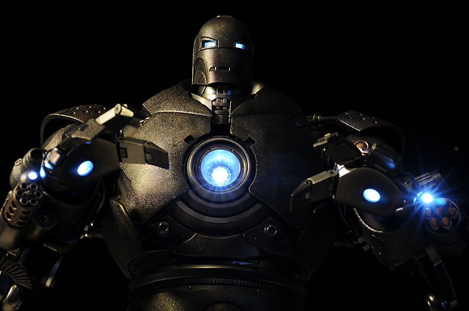
Tony Stark's business partner, Obadiah Stane secretly sold weapons and built his own armored suit after Tony refused to continue Stark Industries' weapons business.